地政学
ネピドーはヤンゴンの港湾都市性から離れ、内陸の中央部に置かれた首都です。軍政、国境紛争、ASEAN外交、災害対応が集まる中枢で、国家の安全観と統治の距離を読み取れます。広い道路は政治の言葉にもなっています。
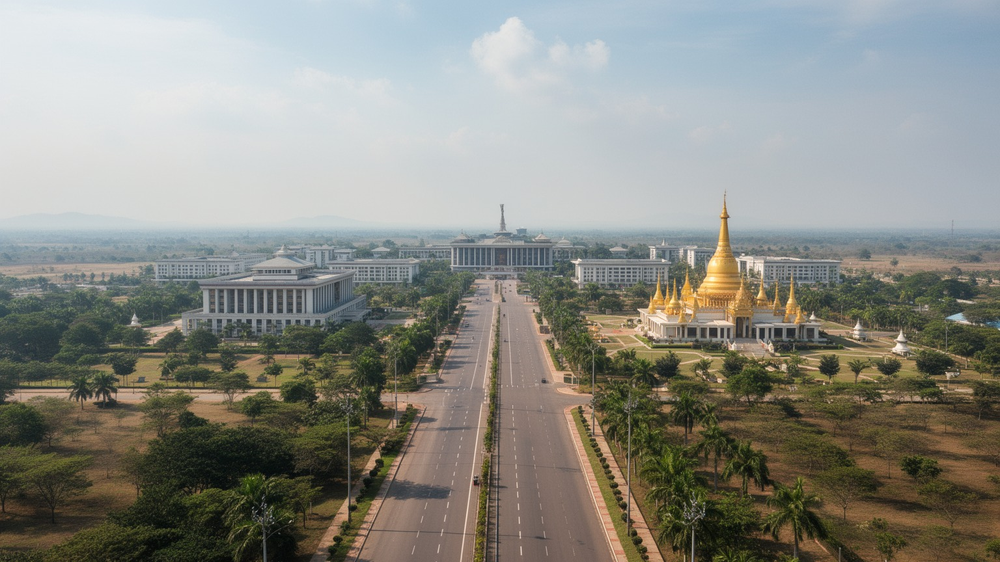
🇲🇲 ミャンマー / ネピドー連邦直轄領 / World City Atlas
ヤンゴンから内陸へ移された計画首都です。広い官庁街、軍事式典の空間、仏教施設、農村を囲む道路網、災害と政治不安の影が、ミャンマー国家の現在を静かに映します。
都市の骨格
ネピドーは既存大都市の延長ではなく、官庁、議会、軍事式典、住宅区、ホテル区を広い道路で分けた首都です。空白の大きい都市形態そのものが、統治の距離感を語ります。
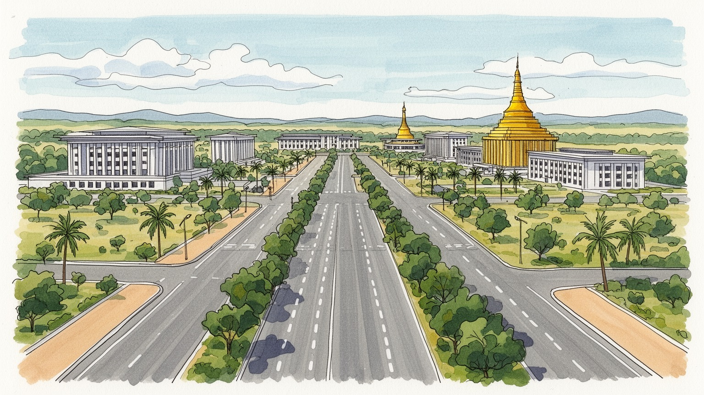
ネピドーはヤンゴンの港湾都市性から離れ、内陸の中央部に置かれた首都です。軍政、国境紛争、ASEAN外交、災害対応が集まる中枢で、国家の安全観と統治の距離を読み取れます。広い道路は政治の言葉にもなっています。
雇用の中心は行政、軍関連、建設、ホテル、交通、農業サービスです。巨大な民間市場は弱く、公務と公共投資が都市のリズムを作ります。周辺農村の労働も首都を支え、物価と移動が家計を強く左右し続けています。
仏塔、僧院、国家儀礼、王都を想起させる名前が、首都の象徴性を強めます。ビルマ仏教の形式と軍政の式典空間が並び、周辺の民族多様性や移住者の生活も重なり、祈りと権力が今も近接する複雑な風景になります。
広い道路、離れた官庁街、ホテル区、住宅区、湖と公園が日常の移動を長くします。観光はウッパタサンティ・パゴダ、博物館、庭園、議会周辺を巡り、静けさと管理された景観を慎重に時間をかけて歩く旅になります。
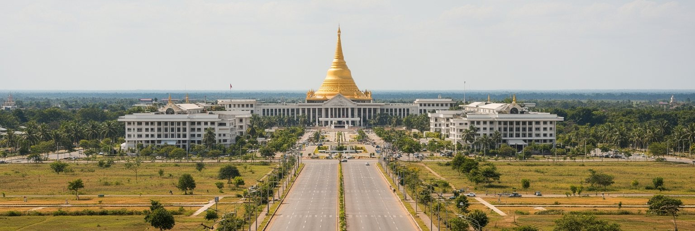
ネピドーを読む第一の入口は、首都が海港都市ヤンゴンから内陸へ移されたことです。ミャンマーの歴史では、王都が河川と平野を押さえる場所に置かれてきましたが、二十一世紀のネピドーは、近代国家の官庁と軍事中枢を広大な土地に配置する計画首都として現れました。位置は国土の中央に近く、ヤンゴン、マンダレー、シャン高原、バゴー地方を結ぶ道路網の節点になります。海から遠いことは貿易や市民社会の厚みから距離を置くことでもあり、同時に内陸の安全、通信、行政移動を重視する判断でもあります。都市の広い道路、分散した官庁、議会、住宅区、ホテル区は、歩いて混じり合う街ではなく、車と権限で結ばれる都市を作っています。そのため、ネピドーの空白は単なる未成熟ではなく、統治する側が秩序、距離、防御、儀礼をどう考えたかを示す都市形態です。周辺には農村、ダム、丘陵、軍事施設があり、首都は緑地の中に孤立しているようにも見えます。ヤンゴンの商業的な雑踏と比べると、ネピドーは国家の意思を先に置き、人の密度が後から追いつく都市です。そこに、この首都の異様さと重要性があります。内陸遷都は地図上の移動ではなく、港湾都市の開放性、植民地期から続く行政中心、民間経済の集中を組み替える試みでした。結果として、国民に近い首都というより、国家装置が国民を見下ろすような距離感も生んでいます。
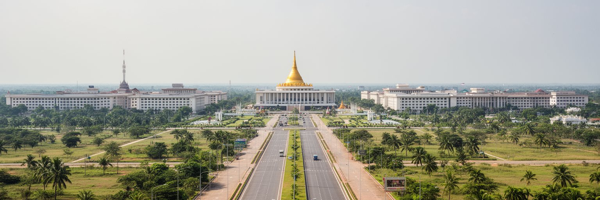
ネピドーの政治性は、ミャンマーの軍政と切り離せません。省庁、議会、軍事式典の会場、幹線道路、厳重に管理された区域は、行政の効率だけでなく、権力の可視化と安全確保のために作られています。広すぎる道路や空地は、訪問者には非現実的に見えますが、群衆の集まりにくさ、車列の移動、警備のしやすさという政治的な機能を持ちます。二〇二一年のクーデター後、ミャンマーでは国内各地で紛争、弾圧、避難、経済停滞が深まりました。その中でネピドーは、国民の生活から離れた中枢として見られる一方、交渉、外交、国際機関との接触、選挙制度の発表、災害対応の命令が出る場所でもあります。首都の建物は整っていても、制度への信頼が弱ければ、官庁街の秩序は社会全体の安定を保証しません。市民が行政サービスを受ける場としての首都と、軍が国家を管理する場としての首都は、同じ道路の上に重なっています。ネピドーを歩くと、巨大な国家空間の静けさが、政治的な緊張をかえって強く感じさせます。権力は人の多さではなく、接近できる区域とできない区域の線引きで表れます。官庁街の距離、検問、許可、見通しの良い道路は、都市のデザインが民主的な広場にも、管理の装置にもなり得ることを示します。住民にとって重要なのは、巨大な建物よりも、手続きが公平で、情報が届き、危機の際に命を守る行政が働くかどうかです。
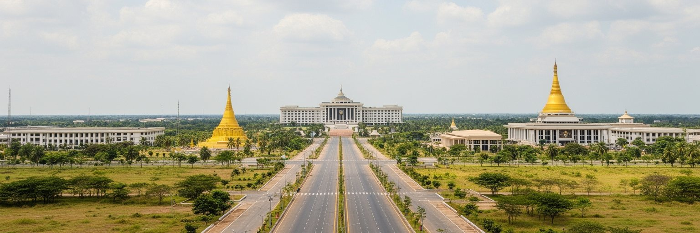
ネピドーの都市形態で最も有名なのは、車の少なさに比べて異様に広い道路です。複数車線の幹線道路、遠く離れた官庁群、ホテル区、住宅区、商業施設、公園、湖が、歩行者の連続した街並みよりも、分散したゾーンとして作られています。多くの首都では広場や駅前が人の密度を生みますが、ネピドーでは距離そのものが都市の印象になります。移動は自家用車、公用車、タクシー、バスに頼りやすく、歩いて偶然に店や人に出会う感覚は弱くなります。これは単に空いている都市というだけではなく、都市活動を管理し、官庁や居住地を分け、交通を制御する思想を示します。一方で、広い土地は将来の拡張余地、緑地、防災空間、式典道路としての可能性も持ちます。問題は、その余白が住民の生活を豊かにする公共空間になるのか、ただ移動距離を長くする空白にとどまるのかです。広い道路は暑季の日射を強め、徒歩や自転車を難しくし、低所得者や車を持たない人の都市利用を制限します。商業の密度が薄いと、雇用や夜のにぎわいも育ちにくくなります。ネピドーの風景は、計画都市の整然さと、都市らしい混雑や偶然の不足を同時に見せます。近代的な道路があるのに、人の気配が薄いという逆説が、首都の性格を象徴しています。公共交通、木陰、歩道、近所の市場が増えなければ、広さは快適さではなく負担になります。都市の成熟は、巨大な幅員を人が使える距離へ縮める工夫にかかっています。
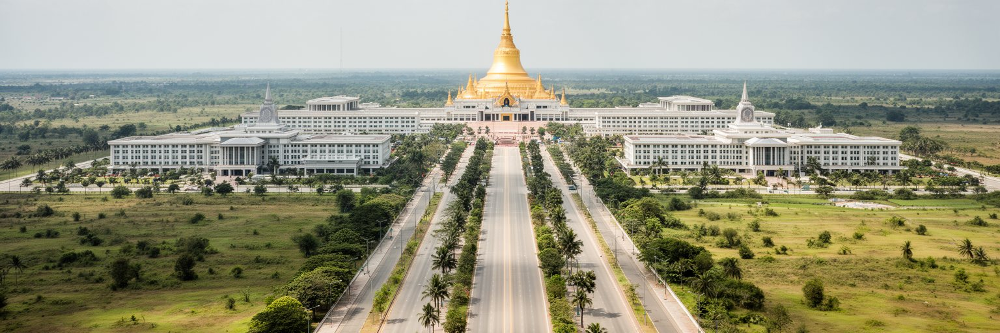
ネピドーという名前は、王の住まう都を思わせる響きを持ちます。新しい首都でありながら、都市はミャンマーの王都の記憶、ビルマ仏教の象徴、国家儀礼を組み合わせて正統性を作ろうとしています。ウッパタサンティ・パゴダはヤンゴンのシュエダゴン・パゴダを想起させる大きな仏塔で、首都の宗教的な目印になっています。仏教施設、僧院、寄進、祝祭、国家行事は、政治権力が宗教的な保護者としてふるまう場にもなります。ただし、ミャンマーはビルマ族仏教徒だけの国ではありません。カチン、カレン、チン、ロヒンギャ、シャン、モンなど多様な民族と宗教があり、紛争や差別の記憶も深く残ります。首都が仏教的な象徴を強く掲げる時、その表現が国民統合になるのか、少数派を周縁へ押し出すのかは慎重に見る必要があります。ネピドーの宗教空間は観光の見どころであると同時に、国家が何を中心的な文化として示すかを表す政治的な舞台です。住民にとって寺院は祈り、寄付、家族行事、教育、相談の場でもあります。儀礼が人々の支えになる一方、権力の演出に使われる時には緊張も生まれます。仏塔の金色の輝きと、紛争地で暮らす人々の不安を同じ国の現実として見ることが、ネピドーを読み誤らないために必要です。信仰は都市を温めますが、国家象徴として掲げられる時には、誰が含まれ、誰が見えなくなるのかを問い続ける必要があります。
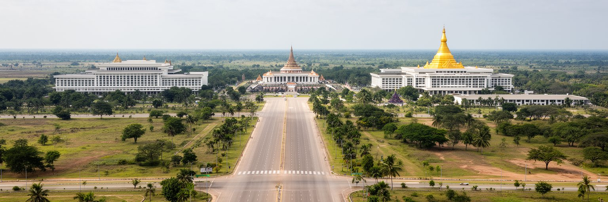
ネピドーの経済は、ヤンゴンのような港湾商業やマンダレーのような広域市場とは異なり、行政と公共投資を中心に動きます。省庁、公務員住宅、軍関連施設、建設、道路維持、警備、ホテル、飲食、輸送、清掃、小売が、首都としての需要に応じて働きます。国際会議や政府行事がある時にはホテル区や道路の利用が増えますが、民間の街場経済は人口規模に比べて薄く、店や市場のにぎわいは区画によって大きく違います。周辺の農村では米、豆類、野菜、畜産、日雇い労働が家計を支え、首都の食料やサービスの一部を供給します。建設労働者、公務員の家族、運転手、家事労働者、警備員、露店商は、巨大な官庁街の外側で都市の日常を作ります。ミャンマー全体の経済は通貨安、物価上昇、輸入制約、紛争によって揺れており、首都で働く人々の生活費にも影響します。公務の安定は魅力ですが、政治的忠誠、給与水準、移動制限、家族の教育や医療の条件もついて回ります。ネピドーの労働市場を見ると、国家が作った都市が民間の仕事を自然に生むわけではないことが分かります。雇用を厚くするには、行政需要だけでなく、地域農業、物流、教育、保健、観光、中小企業をつなぐ仕組みが必要です。広い首都を維持する仕事は多くても、それが安定した所得と技能の蓄積につながるかは別の焦点です。見えにくい周辺労働を含めて初めて、首都経済の実像が見えます。
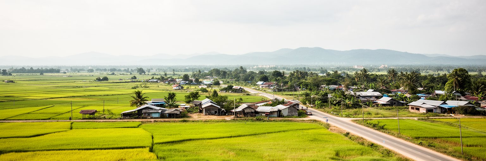
ネピドーは首都でありながら、周囲に農地、村落、灌漑施設、丘陵が広がる都市です。計画首都のイメージでは巨大な道路と官庁が目立ちますが、直轄領の生活を支えているのは、以前からこの地域で暮らしてきた農家、移住してきた労働者、村の市場、学校、診療所です。首都建設は土地利用を変え、補償、移転、道路による分断、農地価格、労働機会の変化をもたらしました。農村の人々にとって、首都は仕事や行政サービスへの近さを生む一方、物価上昇、土地の不安、都市的な規制も運んできます。広い道路は車には便利でも、村の歩行者や二輪車、家畜、農作業の移動には大きな障壁になることがあります。都市計画が官庁区を中心に考えられると、周辺集落の水、排水、学校、医療、通信の課題は見えにくくなります。ネピドーを本当に理解するには、中央政府の建物だけでなく、田畑の畦道、バス停、村の茶店、農産物を運ぶ小型車を見る必要があります。首都の広さは国家の余白であると同時に、村の生活圏を含んだ土地でもあります。農村と都市の境界が曖昧だからこそ、行政サービスは都市住民だけでなく、周辺農家の暮らしにも届かなければなりません。首都の近くに住むことが豊かさを約束するとは限りません。土地を失った人、建設で働いた人、公務員向け需要に商いを合わせた人の経験はそれぞれ違います。首都化は地図を変えるだけでなく、近所の時間の使い方を変えます。
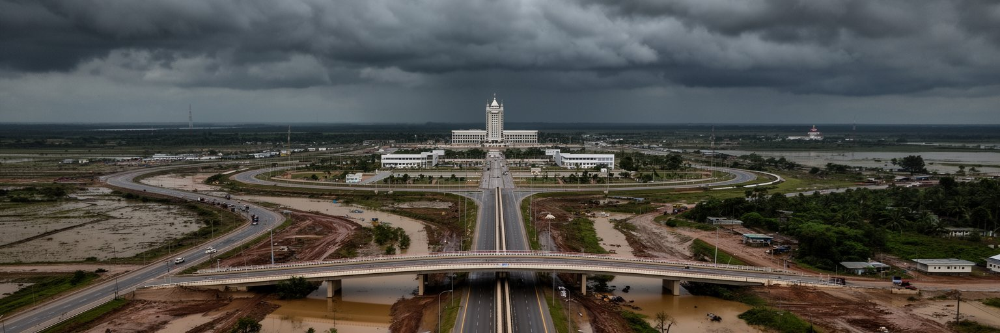
ネピドーは内陸にあるため、沿岸サイクロンの直撃を受けにくい印象がありますが、災害リスクから自由ではありません。雨季には洪水や道路冠水が起こり、二〇二四年には台風ヤギに関連する豪雨と洪水が直轄領にも影響しました。さらに二〇二五年三月二十八日の地震では、ネピドーで大きな被害と経済損失が報告され、広い道路と新しい建物を持つ計画首都でも耐震性、復旧力、情報伝達が問われることになりました。官庁が集まる首都が被災すれば、被災地への命令、救援物資の配分、国際支援の調整、医療体制、通信の維持に影響します。都市の災害対応は、立派な道路だけでは成り立ちません。橋、排水路、電力、通信、病院、避難所、燃料備蓄、公共交通、地域の連絡網が連動して初めて機能します。広い区画は避難空間を確保しやすい一方、車を持たない住民や農村部の高齢者には移動距離が負担になります。地震や洪水は、官庁街と周辺村落の間にあるインフラ格差も浮き彫りにします。ネピドーを防災の視点で見ると、首都の強さは中枢を守ることだけではなく、周辺の住民が情報を得て、避難し、医療と食料に届く仕組みを持つことにあります。国家の命令が出る場所であるほど、足元の地域防災が弱ければ説得力を失います。災害後の復旧は政治の信頼にも直結します。透明な被害把握と公平な支援がなければ、広い首都の整然さは生活の安心に変わりません。
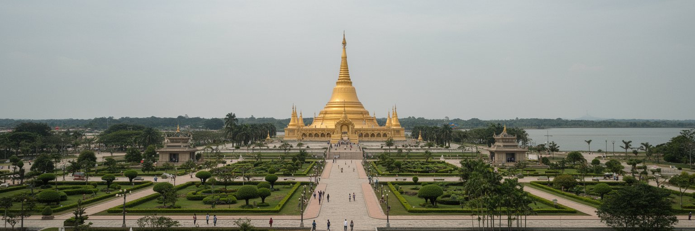
ネピドー観光は、にぎやかな旧市街を歩く旅とはかなり違います。主な目的地はウッパタサンティ・パゴダ、国立博物館、動物園、サファリパーク、庭園、湖、広い官庁街、議会周辺の景観です。見どころは点在しており、移動には車が必要になることが多く、都市を歩いて偶然に発見する楽しみは限られます。その代わり、ネピドーには、国家が作った空間の規模、静けさ、道路の幅、仏教的な象徴、管理された景観を観察する独特の旅があります。観光客は、なぜこのような首都が作られたのか、なぜ道路が広く、なぜ官庁が離れ、なぜ人影が少ないのかを考えながら移動します。これは通常の名所観光というより、政治地理を体感する訪問です。ホテル区は整っていますが、街場の飲食や夜のにぎわいはヤンゴンほど多くありません。訪問者は、静けさを空虚と決めつけるだけでなく、そこに働く警備員、清掃員、運転手、店員、僧侶、農村から来る人々の生活も見る必要があります。観光が地域に利益をもたらすには、ガイド、交通、飲食、小売、博物館解説、周辺村落との連携が欠かせません。ネピドーの魅力は派手な街歩きではなく、現代国家が都市をどう設計し、象徴化し、管理するのかを考える材料にあります。仏塔の夕景や広い道路の遠近感は印象的ですが、その背後の政治と生活を読むことで、旅は初めて深くなります。
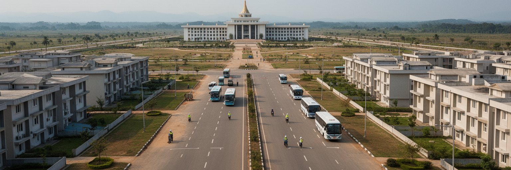
ネピドーの社会問題は、都市内部の貧困だけでなく、国家中枢と国民生活の距離として現れます。ミャンマーでは紛争、避難、徴兵への不安、通貨安、物価上昇、電力不足、教育の中断、医療へのアクセス低下が多くの地域を苦しめています。首都の道路が整っていても、地方で暮らす人々の安全や生活が改善しなければ、首都の整然さは国全体の豊かさを示しません。ネピドー自体にも、公務員住宅、周辺農村、建設労働者の住まい、非公式の小商い、移住者の生活があり、官庁街だけでは見えない格差があります。広い都市では、公共交通や徒歩環境が弱いと、車を持たない人ほど仕事、学校、病院、行政窓口へのアクセスが難しくなります。政治的な発言が制限される環境では、住民の不満や被害が公式な場に届きにくくなります。社会問題を都市として扱うには、住宅、交通、保健、学校、食品価格、労働条件、災害支援、情報公開を一つずつ見る必要があります。ネピドーは巨大な権力の舞台であるほど、そこに住む普通の人の暮らしを見落としやすい都市です。誰が道路を清掃し、誰が官庁で働き、誰が夜に帰るバスを待ち、誰が市場で食材を買うのかをたどると、中枢の内側にも生活の脆さがあることが分かります。首都の正当性は、建築の威容ではなく、最も弱い住民が公共サービスに届くかで測られます。距離を縮める制度がなければ、広い首都は孤立を深めます。
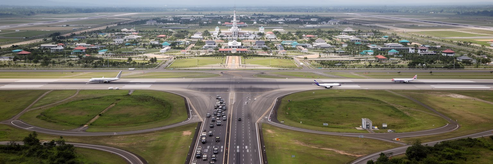
ネピドーは海港を持たない首都ですが、道路、鉄道、空港を通じて国内外と結ばれています。ヤンゴンやマンダレーへ向かう幹線道路は、政府職員、企業関係者、物流、軍事移動、地方からの来訪者を運びます。空港は国際会議や外交の入口として整備されましたが、便数や需要は政治情勢と経済状況に左右されます。ASEAN、国連機関、近隣国、援助関係者との接触では、ネピドーが公式交渉の舞台になります。ミャンマーの紛争や人道危機が国際問題化するほど、首都の会議室は国内の現実と外部の圧力がぶつかる場所になります。外交都市として重要なのは、建物や空港の大きさだけではありません。交渉に市民の安全、人道アクセス、避難民、少数民族の声がどこまで反映されるかが問われます。交通面では、内陸の首都であることが、港湾経済のヤンゴン、北部物流のマンダレー、国境地域との役割分担を生みます。燃料、輸入品、医薬品、通信機器が滞れば、首都の機能も影響を受けます。広い道路は国内統治の象徴であると同時に、危機時の輸送路でもあります。ネピドーを地域交通と外交の視点で見ると、この都市は孤立した空白ではなく、国土の分断と外部関係をつなぐ結節点であることが分かります。ただし、結節点であることは開放性を意味しません。誰が通行を許され、誰の情報が届き、誰が交渉の席に着けるのかによって、交通と外交の意味は大きく変わります。首都の窓が外へ開くほど、国内の声も通す必要があります。
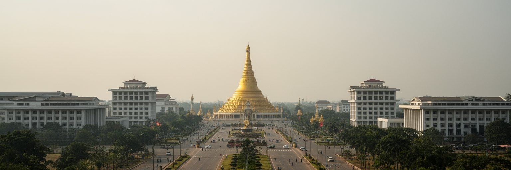
ネピドーは、人口密度や民間経済のにぎわいで世界都市を測る考え方からは外れています。それでも重要なのは、現代国家が首都を通じて安全、権威、宗教、行政、外交、距離をどう設計するかを極端な形で見せる都市だからです。巨大な道路、分散した官庁、仏塔、ホテル区、空港、農村周縁、災害対応の中枢は、ミャンマーの政治と社会の矛盾を一つの地図に集めています。ここでは、経済規模の大きさよりも、首都が国民からどのような距離に置かれているかが重要です。ヤンゴンの市場や港のような市民的な活力とは違い、ネピドーは管理された静けさによって国家を表現します。その静けさは、訪問者に異様さを感じさせるだけでなく、統治と生活がどれほど離れ得るかを考えさせます。二〇二四年の洪水、二〇二五年の地震、続く紛争と経済不安は、計画首都の整然さだけでは国の脆さを隠せないことを示しました。ネピドーを読むことは、首都とは何か、国家の中枢は誰のためにあるのか、広い道路と大きな建物は生活の安心へ変わるのかを問うことです。世界都市の地図には、金融や文化の中心だけでなく、権力の距離を見せる都市も必要です。ネピドーの空白は、欠落であると同時に、現代アジアの国家形成を読む強い手がかりです。人が少ない風景ほど、そこで決められることの重さを意識させます。